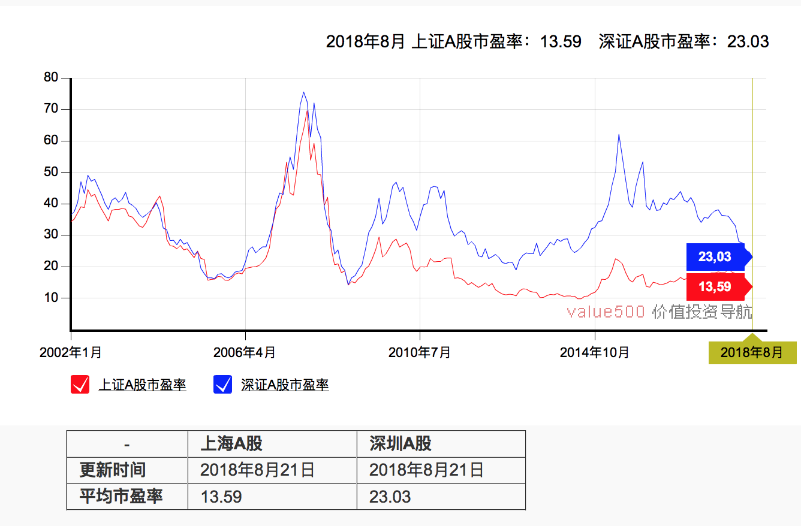

17. 如何评估公司的市盈率？
上一课我讲到股价等于每股收益 EPS 乘以市盈率 P/E，每股收益是业绩因素，市盈率是估值因素。股价和每股收益都是绝对值，而市盈率是一个比值。直观来说，市盈率就是股价比上每股收益的比值，反映的是投资者为了获得公司每股收益愿意支付的溢价，或者说估值。市盈率越高，既可以反映市场对这只股票未来的收益预期很高，也可以反映投资这只股票收回成本的周期比较长，反过来也是这样。
可见，市盈率是基于 EPS 计算的，但是 EPS 往往只有季度值和年度值，是一个相对的慢变量。因此为了及时跟踪市盈率，市场有三种主流的计算方式，第一种叫静态市盈率，是拿股票的总市值除以最近一年的年度净利润；第二种叫动态市盈率，是总市值除以最新一个季度利润的4倍，或者总市值除以最近半年利润的 2 倍；第三种叫市盈率 TTM，第一个T代表滚动，第二个 T 代表十二，M 代表月，TTM 就是“滚动十二月”，因此又叫滚动市盈率。这种市盈率的计算方式是总市值除以最近 12 个月的净利润。
不难看出，滚动市盈率相对来说最为科学，因此也是最常用的市盈率计算方式，你如果要看一个公司的估值贵不贵，看这个指标就可以了。
之前我介绍过股利贴现模型（DDM模型），这种模型的假设是股票的现值，也就是现在的价格应当是未来股息的贴现值。换句话说，现在的价格由贴现率决定，而贴现率是预期收益率的倒数值，而预期收益率等于无风险利率加上风险溢价。进一步分拆，可以把市盈率的影响因素总结为四点：
第一个因素是无风险利率。无风险利率是投资者投资股票的机会成本，是投资者期望的最低报酬率，也是资产定价的基准。如果投资者在股票市场取得的收益低于无风险利率，那么 TA 很有可能会选择储蓄或者其他投资方式获得高于此种利率的回报。投资者一般可以通过国债到期收益率来观察真实的无风险利率。无风险利率也受到很多因素影响。
短期来看，无风险利率受到货币政策和监管政策的双重影响。比如从 2014 年开始，以国债收益率为代表的无风险利率持续大幅下行，直接催生了 2015 年的股票大牛市。其背后的原因就是央行从 2014 年开始货币政策转向宽松，先是定向降准，然后又多次降准降息，10 年期国债下行近 200 个 bp，说明资金面极度宽松，由此大幅提升了股市的估值中枢，所以很多人称之为“水牛”。
中期来看，无风险利率取决于经济基本面。简单来说，经济好的时候利率会上行，经济差的时候利率会下行。比如刚才提到 2014 年的例子，当时的利率下行除了央行的降准降息之外，还有一个关键原因，就是经济从 2014 年初开始一路下行，破了 7%，经济活动不活跃，资金的需求就少了，利率自然会下行，所以我们也叫它衰退型宽松。
长期来看，无风险利率取决于人口。人口结构决定储蓄率水平，人口老龄化会导致储蓄率下降，利率随之下行。以日本为例，日本在泡沫经济破灭后，进入了长达 20 多年的通货紧缩，关键原因就是人口老龄化，导致总需求不振，储蓄率下降，投资萎靡，经济基本面长期停滞。
第二个因素是风险偏好。风险偏好其实反映的就是市场情绪和预期，受到很多因素的影响。我认为最重要的是内部的政策因素和外部的国际环境。政策方面，一些重大的政策会对市场预期产生极大的影响。比如 2014 年大老虎落马事件，体现了中央史无前例的改革决心，当时极大的鼓舞了市场，提振了大家对于未来改革的信心，为股票牛市点了最初的一把火。除此之外，十八届三中全会、十九大等重要会议，雄安新区等重大战略，都会改变市场对未来的预期，间接影响市场的估值水平。
国际方面就更复杂了，世界每天都有重大事件发生。有两类时间需要特别关注：一类是政治事件，比如英国脱欧，又比如近期热炒的中美贸易战，3 月 23 日特朗普宣布 600 亿美元关税那天，美国三大股指集体暴跌，跌幅都超过 2.4%，A 股也受到波及，创业板跌幅达到 1.46%。另一类是央行动态，尤其是美联储和欧央行，我们在机构做研究的时候，经常熬夜去等美联储的决议，因为这个实在太重要了。美联储主席的一句话就可能改变全球市场的信仰，一次利率变动更是可以改变全球市场的走向。
第三个因素是公司的成长性，这一点一般与行业和公司的潜力挂钩。同样的利率和风险环境下，为什么不同行业、不同公司的估值是不一样的？因为市场对他们的预期不一样。对于一些传统行业及公司，他们的盈利可能现在还不错，但未来几乎确定要下降，所以市场只愿意给他一个低估值。而对于一些正在崛起的新兴朝阳行业及公司，虽然他们现在盈利低，但市场相信他们未来的盈利会持续增长，愿意给他们高估值，只要未来盈利起来了，估值就会回归到合理区间。举个简单的例子，当你阿里上市的时候都是亏损的，严格来讲都没法计算估值，但没有人会嫌他估值高，因为他的盈利前景摆在那。
从最近几个季度的市场情况来看，A 股平均市盈率在 17-20 倍这个区间上下浮动，而创业板的平均市盈率则在 45-50 倍左右，市盈率大概是 A 股整体的 2-3 倍，也就是说创业板的估值水平大幅高于主板。主要原因就是两个市场的行业分布不同，主板主要是银行、地产、重工业等传统产业，而创业板主要是科技、通信、娱乐等新兴产业。
VeryCB 注：截至 2018 年 8 月 21 日，上证平均市盈率为 13.59，深证平均市盈率为 23.03，正在逐渐接近历史最低——上证平均市盈率历史最低为 2014 年 6 月份的 9.8，深证平均市盈率为 2008 年10 月份的 14.09。

第四个因素是市场结构。不同市场的投资主体和基础制度不同，所以形成的估值水平也不一样。最典型的例子就是 A 股和 H 股的估值差异，很多公司是在大陆和香港 A+H 股同时上市，但同一个公司在两个市场的股价和估值是不一样的。有一个指标叫“AH股溢价指数”，就是反映两地相同上市公司的差价，过去 10 年 AH 股溢价指数均值在 110-120 之间，也就是 A 股在大多数时间都相对港股有一定溢价，主要就是因为两地投资者结构、市场制度也不同。但在沪港通后，投资者结构越来越接近，这种差价也越来越小了。
这些因素共同决定了 A 股的估值水平，那么目前 A 股的估值处于什么位置呢？我认为还是不贵的。在 2007 年前，上证指数市盈率主要处在 20-30 区间。在 2007 年牛市时，上证指数的市盈率达到了最高点 70.7 倍。2015 年牛市最高点是 25 倍，目前的市盈率主要在 17-20 倍左右，相当于 2005-2006 年的市盈率水平，算是处在历史低位，标普500 的 18.5 倍接近。从中小板和创业板来看，市盈率处于中等水平。2015 年牛市创业板市盈率高点突破 130 倍，2017 年低点一度接近 35 倍，现在大概 40-50 倍之间，类高于同类型的美国纳斯达克市场，相对合理。
总结一下，今天我介绍了市盈率的概念、意义和影响因素。市盈率受到无风险利率、风险溢价、公司的成长性和市场结构的影响，从这些角度出发，我们可以理解目前 A 股估值水平的变化，总体上看，泡沫已经消化了不少，现在的股票市场估值相对合理。